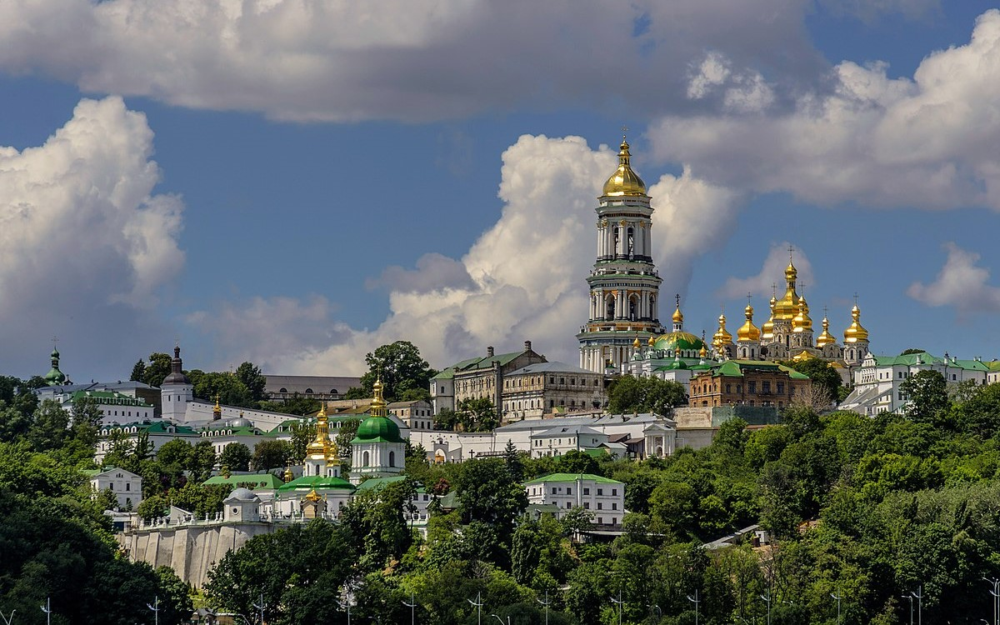
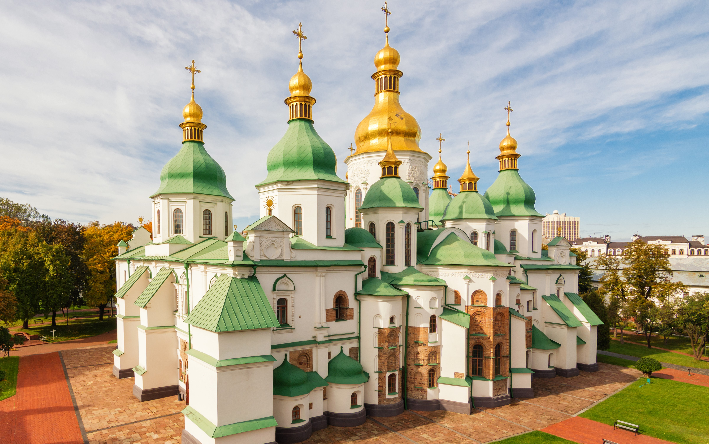
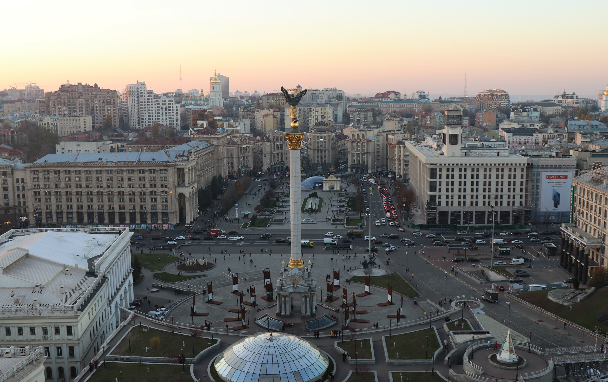
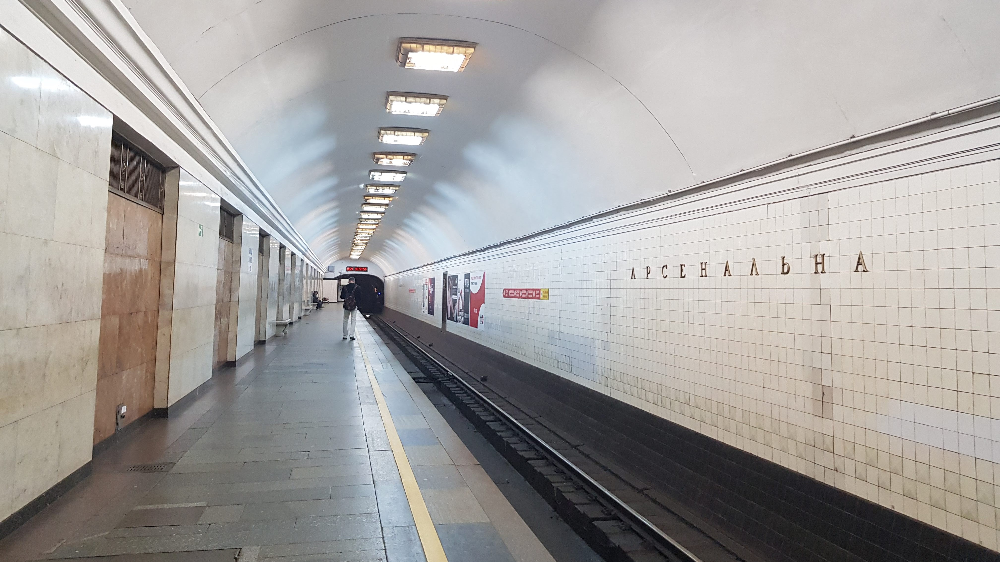

Galería de imágenes

Lugares de interés
Monasterio de las cuevas de Kiev
Es un histórico monasterio cristiano ortodoxo que dio su nombre a uno de los distritos de la ciudad donde se encuentra en Kiev. Símbolo importante de Kyiv y atracción turística número uno de la capital ucraniana, el Monasterio de las Cuevas de Pechersk Lavra es un lugar de visita obligada en Ucrania.
Catedral de Santa Sofia
Es un monumento de arquitectura, pintura y mosaicos del siglo XI. La catedral recibió el nombre de Santa Sofía y, como templo principal del Estado, desempeñó el papel de centro espiritual, político y cultural.
Maidan Nezalezhnosti
Esta plaza es el emblema del fin del comunismo y de ahí su nombre, siendo también el lugar de concentración de todas las grandes manifestaciones y protestas que el pueblo ucraniano ha utilizado para revindicar sus derechos y castigar la injusticia.
Arsenalna Metro Station
Es la estación de metro más profunda del mundo! Construida en la época soviética com metro pero también como refugio atómico, por eso la profundida. es una estación común, se usa normalmente para los que van a visitar el Monasterio de las Cuevas.